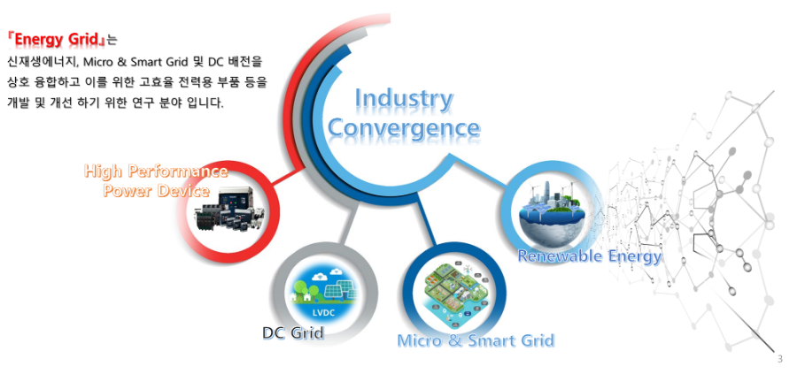
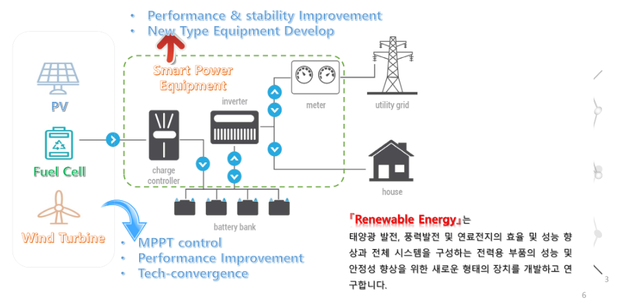
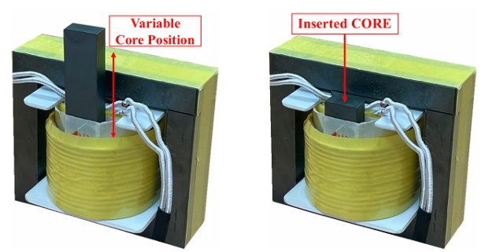
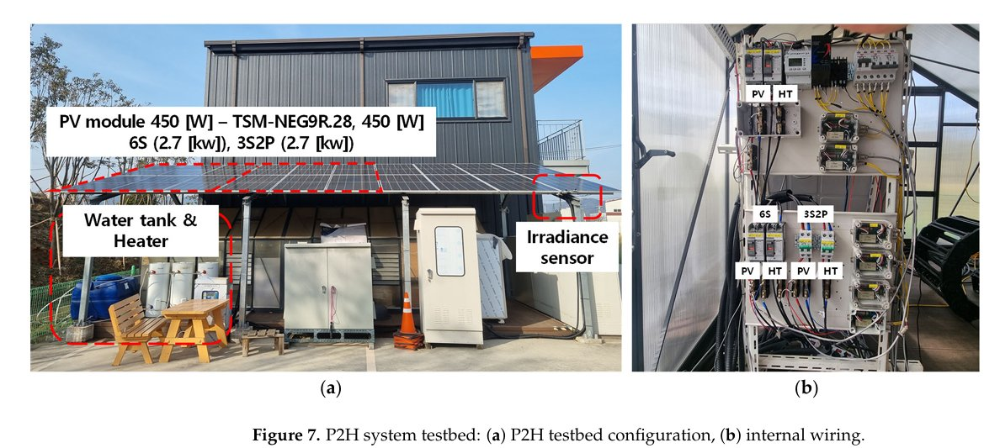
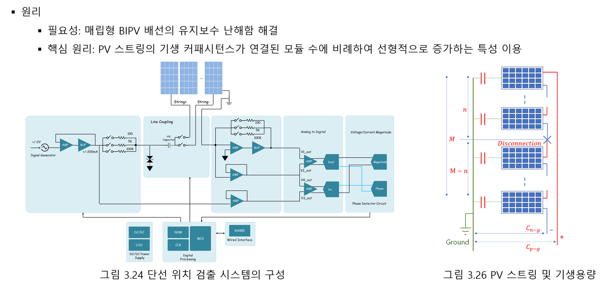
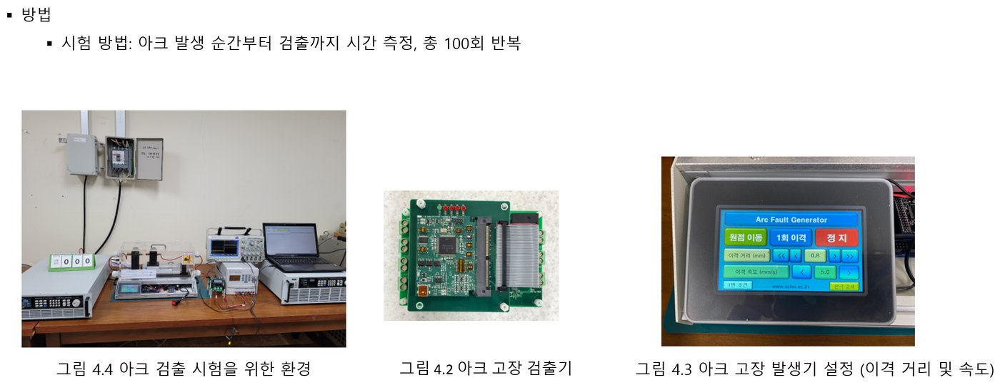

Energy Mechatronics Lab.
고효율 전력변환과 신재생에너지 시스템의 신뢰성을 연구합니다. DC-DC 컨버터(DAB)와 고주파 변압기 설계부터 태양광 고장진단, DC 아크 검출, P2H 시스템까지 — 에너지 그리드를 위한 실용 기술을 개발합니다.
We study high-efficiency power conversion and the reliability of renewable energy systems. From DC-DC converter (DAB) and high-frequency transformer design to PV fault diagnosis, DC arc detection, and P2H systems — we develop practical technologies for the energy grid.

About the Lab
에너지메카트로닉스연구실은 국립순천대학교 전기공학과 및 스마트에너지연구소 소속으로, 김대경 교수의 지도 아래 전력전자 · 전기기기 · 신재생에너지 분야를 연구합니다.
Energy Grid용 DC-DC 컨버터(DAB) 설계 및 고장진단/예측, Solar PV 단선 위치 검출, DC 아크 검출, P2H 성능 향상과 AI 예측 기술 관련 프로젝트를 다수 수행해 왔으며, 지역 에너지 기업 및 연구원과 공동 연구개발과 기술지도를 이어가고 있습니다.
연구실 출신 교수 2인, 창업 2인을 배출했습니다.
The Energy Mechatronics Lab. belongs to the Department of Electrical Engineering and the Smart Energy Research Institute at Sunchon National University. Led by Prof. Dae-kyong Kim, the lab conducts research in power electronics, electric machines, and renewable energy.
We have carried out numerous projects on DC-DC converter (DAB) design and fault diagnosis/prognosis for energy grids, solar PV disconnection localization, DC arc detection, and P2H performance enhancement with AI-based prediction, and we continue joint R&D and technical consulting with regional energy companies and research institutes.
Our alumni include two professors and two startup founders.

Research Areas
전력변환 하드웨어와 신재생에너지 시스템의 성능 향상, 고장 진단 및 예측을 핵심 축으로 연구합니다.
Our research centers on performance enhancement, fault diagnosis, and prognosis of power conversion hardware and renewable energy systems.

DAB 컨버터 & 고주파 변압기
DAB Converters & HF Transformers
가변인덕턴스 변압기, SiC MOSFET 기생성분 보상, 누설인덕턴스 온라인 추정
Variable-inductance transformers, SiC MOSFET parasitic compensation, online leakage-inductance estimation
More
P2H & 신재생에너지
P2H & Renewable Energy
지역·계절별 일사량을 고려한 PV 직·병렬 재구성과 P2H 시스템 성능 향상
Series-parallel PV reconfiguration considering regional and seasonal irradiance to improve P2H systems
More
PV 단선 위치 검출
PV Disconnection Localization
PV 스트링의 기생 커패시턴스를 이용한 휴대형 단선 위치 검출 시스템
Portable disconnection-location detector using the parasitic capacitance of PV strings
More
DC 아크 검출
DC Arc Detection
BIPV 등 DC 시스템 안전성 향상을 위한 아크 발생기 및 고장 검출기
Arc generators and fault detectors for safer DC systems such as BIPV
MoreLatest News
논문, 특허, 수상, 과제, 교육, 구성원 소식Publications, patents, awards, grants, teaching, and team updates
Join Us
전력전자, 전기기기, 신재생에너지 분야에 열정이 있는 학생을 모집합니다. 산학협력 과제와 지역에너지 인재양성 프로그램을 통해 실무 중심의 연구 경험을 쌓을 수 있습니다.
We are looking for students passionate about power electronics, electric machines, and renewable energy. Through industry-academia projects and regional energy workforce programs, you can gain hands-on research experience.
대학원생 (석사 · 박사)
DAB 컨버터, 고주파 변압기, PV 고장진단, P2H 시스템 등 연구 주제에 참여할 대학원생을 모집합니다.
Graduate Students (M.S. · Ph.D.)
We welcome graduate students to work on DAB converters, high-frequency transformers, PV fault diagnosis, P2H systems, and more.
학부연구생
캡스톤디자인, 경진대회, 학부 연구 프로젝트에 참여하며 연구실 생활을 미리 경험할 수 있습니다.
Undergraduate Researchers
Get an early taste of lab life through capstone design, competitions, and undergraduate research projects.
지원 방법
간단한 자기소개와 관심 연구 분야를 적어 지도교수에게 연락 주세요. 연구실 방문 상담도 환영합니다.
How to Apply
Email the professor with a short introduction and your research interests. Lab visits are always welcome.